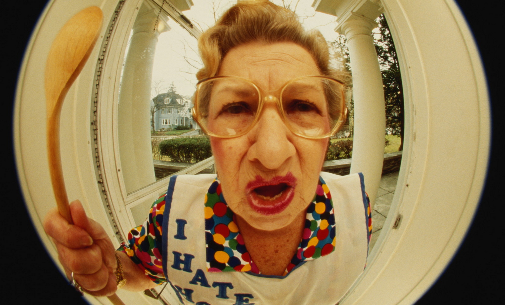
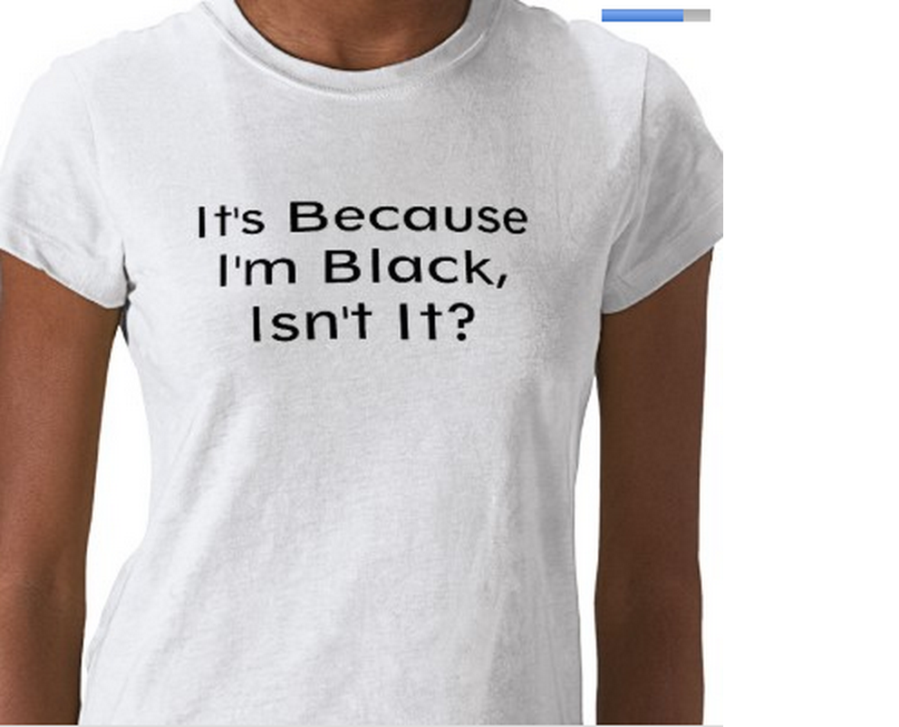

What is Stereotype Threat?
Stereotype threat is a situational predicament in which people are or feel themselves to be at risk of confirming negative stereotypes about their social group. Because of stereotype threat, people who are reminded of negative stereotypes about their race or gender or age or something different perform worse then other people.
Back in 1997, researcher Steven Spencer discovered that intelligent women performed worse on a challenging math test than men did. However, if before the test, women were first led to believe that women typically perform as well as men on the test, women's scores were similar to the scores of the men. It seems that the negative stereotype of women's abilities in math cause women to under-perform on tests. Further research shows that women score higher on math-based tests when testing with a group of all women than when testing in a mixed-gender group.
I have a real example of that from my aunt. She was studying on faculty of Math and Informatics in State University of Moldova (Moldova is a country on the East Europe). It happened around 10-13 years ago. On the very first class of Informatics teacher said “Ladies, if you think that you will get the best grades from me, you are wrong, your place is on the kitchen cooking dinner, not being a programmer.” This stereotype came from ancient times when women didn’t have opportunity to learn and work as men did, they were mostly occupied with home work (laundry, cooking, child care, cleaning and etc.) and today some men still think the same when all people are equal.

One more example that I would like to describe is a stereotype that blond women are always stupid. When people meet a blond woman the never expect from her to speak about some intellectual things, and when these women do everybody is very surprised. The notion of "dumb blonde" has been a topic of academic research reported in scholarly articles and university symposia, which tend to confirm that many people hold to the perception that light-haired women are less intelligent than women with dark hair. There is no evidence to support this perception, which raises the question of its origin. It is believed the originator of the "dumb blonde" was an 18th-century blonde French prostitute named Rosalie Duthé whose reputation of being beautiful but dumb inspired a play about her called Les Curiosites de la Foire (Paris 1775). Many blond actresses have played stereotypical "dumb blondes", including Monore, Goldie Hawn and more. But if you have seen movie Legally Blonde, we can find that Reese Witherspoon is playing opposite side of this stereotype.
One more example is stereotype about mothers-in-law. There are a lot of jokes about this topic. I am not sure if it’s popular in USA, but in countries of past USSR like (Russia, Moldova, Ukraine, Latvia, Lithuania, Belorussia) it is very common. The humor is based on the premise that the average mother-in-law often considers her son-in-law to be unsuitable for her daughter or daughter-in-law unsuitable for her son. I know in some families it happened, but it is absolutely not true for all mothers-in-law.

I spent a lot of time in my life with jewish people. I went to jewish lyceum and worked in Jewish Community. And during that time I’ve heart about all kind of different stereotype about jewish. Jews have been stereotyped as greedy, nit-picky, misers and they have often been depicted counting money or collecting gold and jewels. Anti-Semitism flourished for centuries and reached a climax in Nazi Germany during World War II with the Holocaust, when Hitler tried to exterminate all of the Jews in Europe. Though anti-Semitism is less overt now in polite society than it has been in the past, the underlying stereotypes and attitudes about what it means to be Jewish are still quite prevalent. The following are some common stereotypes:
1)Jewish Mother.
The Jewish mother stereotype generally involves a nagging, overprotective, manipulative, controlling, smothering, and overbearing mother or wife, one who persists in interfering in her children's lives long after they have become adults.
2)The Moneylender/Moneychanger.
During the Middle Ages Jews were not allowed to do many of the jobs that Christians did, for example they couldn’t owe a land, and they started to learn medicine, science and literature. And then after that these professions became more paid and jewish people became rich. And because of their involvement with money and banking, Jews got the reputation of being greedy and it was said that Jews would do anything for money.
3)Nice Jewish Boy.
A "nice Jewish boy" is a mensch, roughly defined as a good person or nice guy. He is intellectual, nerdy, socially awkward, physically weak and slightly neurotic.
And the last stereotype that I faced when I moved in America was stereotype about African Americans. Stereotypes and generalizations about African Americans and their culture have evolved within American society dating back to the colonial years of settlement, particularly after slavery became a racial institution that was heritable. The early blackface minstrel shows of the 19th century portrayed blacks as joyous, naive, superstitious, ignorant, and musically inclined—characteristics related to the way slaveholders in earlier years believed them to be. Scholars agree that news stereotypes of African Americans people say that more these people are more likely to appear as perpetrators in drug and violent crime stories on network news. Common stereotypes of black women in the 21st century are gold digger. Perhaps the most popular stereotype is that of the “angry black woman,“ whom media depict as upset and irate; consequently she is often deemed a “bitch”. And a lot of other stereotypes.

All in all we are all people, and we are all the same we have 1 head, 2 legs, 2 arms 2 eyes and 1 nose and it doesn’t depend from our age, gender, color of skin or religion. Let’s take off all of these stereotypes and let’s be happy in our common world.
Thank you,
Iulia